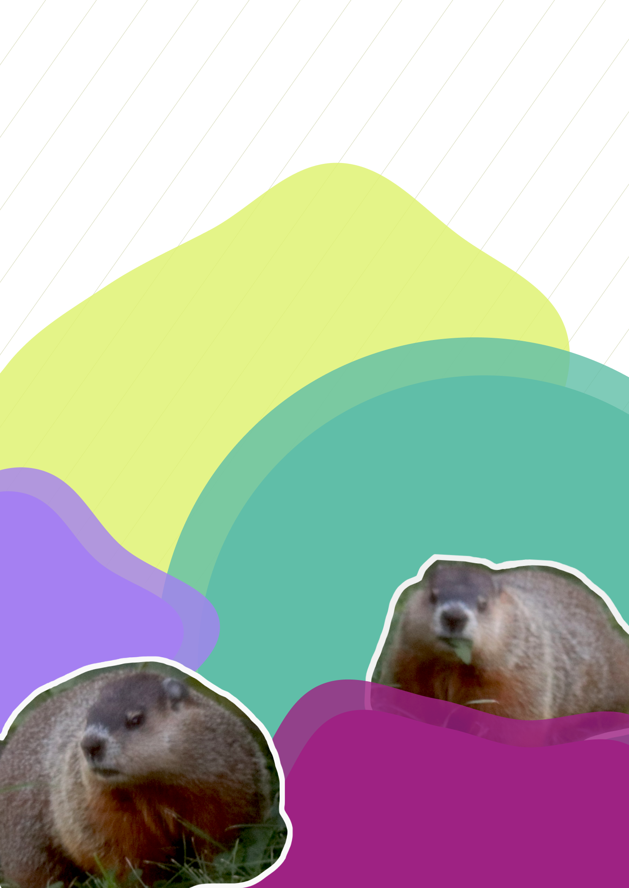

BILL MURRAY
Our sweet, senior pup passed away in late 2020 and for the first time in the 10 years that we’ve lived here, groundhogs have moved in. We saw Bill a few times and realized he had set up a burrow under our barn (a barn he was sharing with Frank, the opossum - I’m not sure what their relationship is, but I like to think that they’re good friends). We haven’t felt ready to adopt a new pup yet, so Bill and his family have been fun to watch in the meantime (also once a new dog is roaming the property, I’m fairly certain that the groundhogs will move on to a new space).
At first, I thought it was just Bill hanging out under the barn, but one day I heard some commotion and saw two of them! They were having a bit of a dispute and retreated to their burrow to further work through things once they spotted me. We named Bill’s mate Billhemina.
*note* Bill and Billhemina are very fast and elude my camera the majority of the time. The kids are slower and I’m able to get clearer photos of them.
